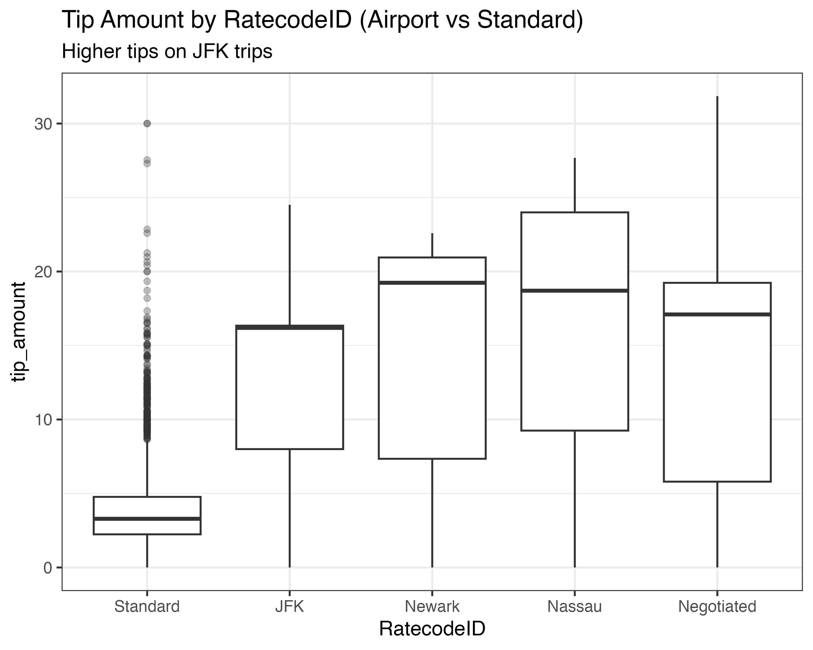
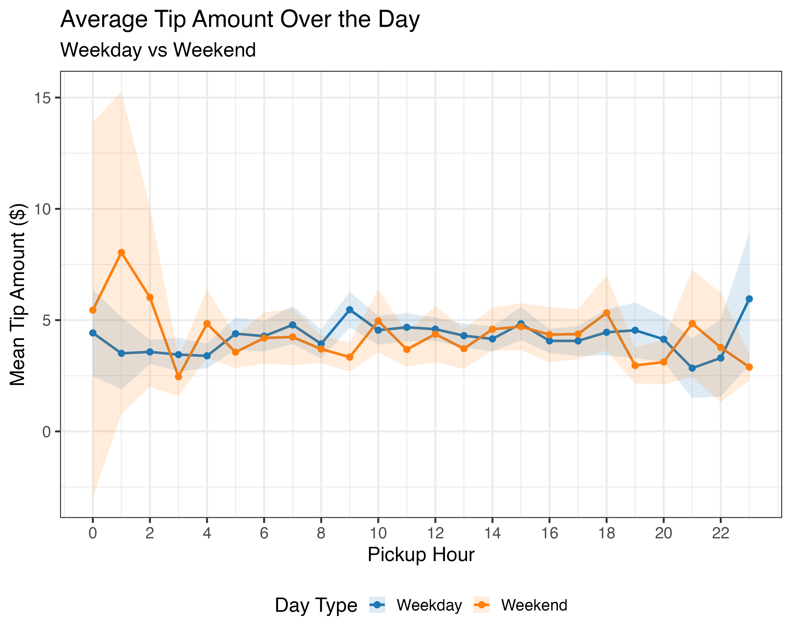

Predicting NYC Yellow Taxi Tips
1 Project Links


Data Source: NYC Taxi & Limousine Commission (TLC) Yellow Taxi Trip Records (full year of Parquet files loaded via arrow).
Technologies: R, tidyverse, arrow, ggplot2, shiny, linear regression, RAG for chatbot.
2 Project Overview
This project analyzes tipping behavior in New York City Yellow Taxis. The dual goals were:
- Prediction: Build a linear regression model to predict
tip_amount. - Insights: Develop at least two meaningful, non-trivial insights into when, where, and why riders tip more or less.
Data is loaded from PARQUET files, cleaned, and analyzed with a focused subset for high-quality insights and model performance. The project culminates in a production-ready interactive Shiny dashboard.
3 Interactive R Shiny Dashboard
The dashboard lets users:
- Filter and explore tipping patterns by time, pickup/dropoff zones, trip characteristics
- View dynamic visualizations and model predictions
- Use a natural language chat interface (powered by RAG with project knowledge base, analysis, and model coefficients) to ask questions like “What factors most influence tips at JFK airport?”
Try it live: powellonpoint.shinyapps.io/taxi-tips
The app includes the saved model (tip_model.rds), cleaned dataset, and all insights.
4 Key Insights
4.1 1. Airport Trips (Especially JFK) Command Significantly Higher Tips
Trips with airport rate codes (particularly JFK) show substantially higher tip amounts compared to standard metered trips. This is likely due to longer distances, fixed fares in some cases, business travelers, and cultural norms around airport transfers.

4.2 2. Strong Temporal Patterns in Tipping Behavior
Tips vary significantly by time of day, rush hour status, overnight periods, and day of the week:
- Rush hour premiums are evident across weekdays
- Overnight trips often see different tipping dynamics
- Weekday vs weekend patterns diverge, with clear peaks during certain hours

These insights were derived through extensive EDA, grouping by engineered features (rush_hour, overnight, pickup_dow, pickup_hour), and visualization with ggplot2.
5 Predictive Modeling
A linear regression model was trained to predict tip_amount using features such as trip distance, duration, time-of-day indicators, rate code, passenger count, and location-based variables.
- Model saved and deployed in the Shiny app for real-time predictions
- Model performance and coefficients inform the RAG knowledge base for accurate chatbot responses
- Full details, validation, and diagnostics available in the repository
6 Repository
code/: Data loading (arrow), cleaning, validation, and modeling scriptstaxi-tips-shiny/: Full Shiny application withapp.R, plots, model artifactsdata/: Parquet and processed RDS filesdocs/: Rendered reports, insights, executive summary
See the full GitHub repo for all code, data processing pipelines, and additional resources including the executive summary PPTX.
7 Learn More
This project demonstrates end-to-end data science skills: from large-scale data handling with Parquet/Arrow, insightful EDA and visualization, statistical modeling, to production deployment of an AI-enhanced interactive web application.